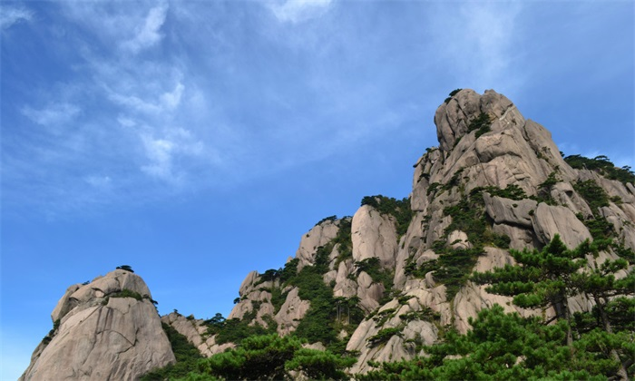
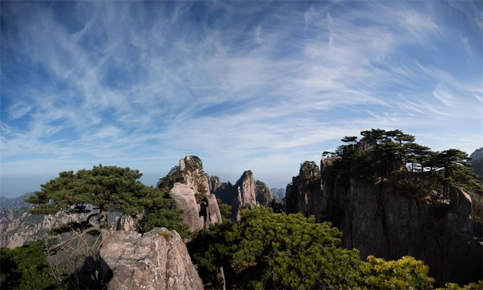

-
黄山之行---《山中问答》唐·李白
问余何意栖碧山，笑而不答心自闲。
桃花流水窅然去，别有天地非人间。
-
《夜泊黄山闻殷十四吴吟》唐·李白
昨夜谁为吴会吟，风生万壑振空林。龙惊不敢水中卧，猿啸时闻岩下音。我宿黄山碧溪月，听之却罢松间琴。朝来果是沧洲逸，酤酒醍盘饭霜栗。半酣更发江海声，客愁顿向杯中失。
-

《翠微峰》宋·无名氏 洞里乾坤世莫知，时闻啸鹤带云归。几回洞口乘风立，欲挟飞仙入翠微。
-
《送温处士归黄山白鹅峰旧居》 唐·李白 黄山四千仞，三十二莲峰。丹崖夹石柱，菡萏金芙蓉。伊昔升绝顶，下窥天目松。仙人炼玉处，羽化留馀踪。亦闻温伯雪，独往今相逢。采秀辞五岳，攀岩历万重。归休白鹅岭，渴饮丹砂井。凤吹我时来，云车尔当整。去去陵阳东，行行芳桂丛。回溪十六度，碧嶂尽晴空。他日还相访，乘桥蹑彩虹。
-

《同友人游黄山》 明·汤宾尹
冒雨穿山羡未曾，息肩无寺寺无僧。宽围白浪身千叶，峭入青天手一藤。龙吼药炉舂急杵，猿调茶鼎煮孤灯。与君伸脚量峰碛，踏着云光不记层。
-
《游黄山》宋·焦炳炎 秀出云霄一杖探，诸峰高下护晴岚。丹成兔魄香生杵，影见龙津月在潭。洞暖有花因七七，云深无语住三三。粥鱼敲动山林典，合傍浮丘去结庵。
-
《百步云梯》 明·唐世靖 一线天高不可升，穿云深处有梯登。猿惊难上回山木，鸟骇迟飞落野藤。行客携筇常起伏，山僧着屐每凌兢。后阶先幸奇松护，独立能遮最上层。